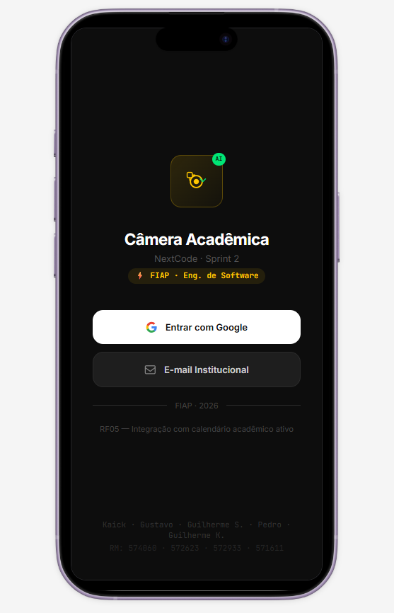
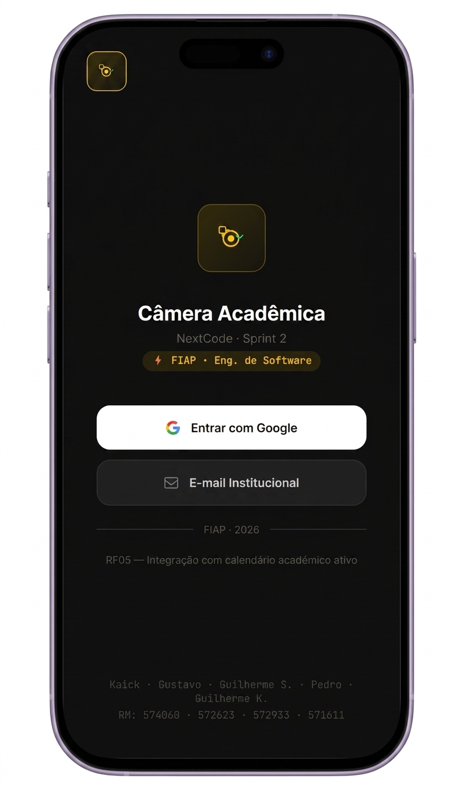
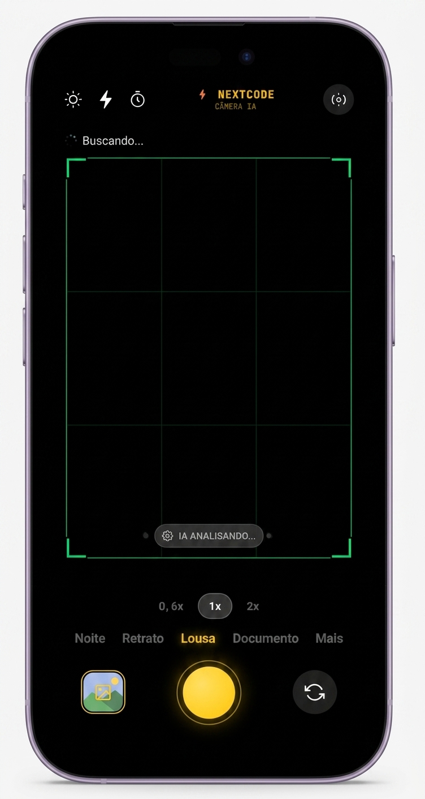
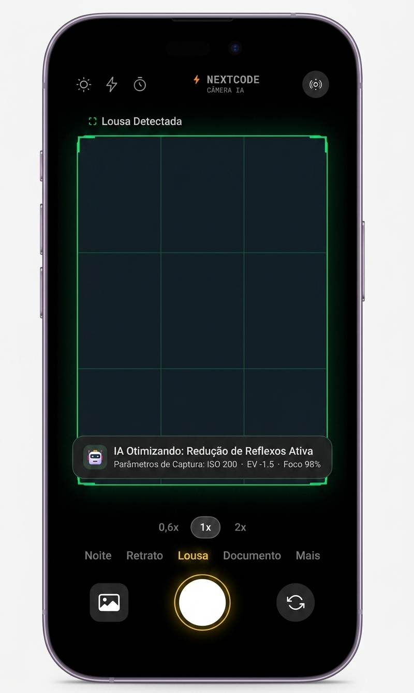
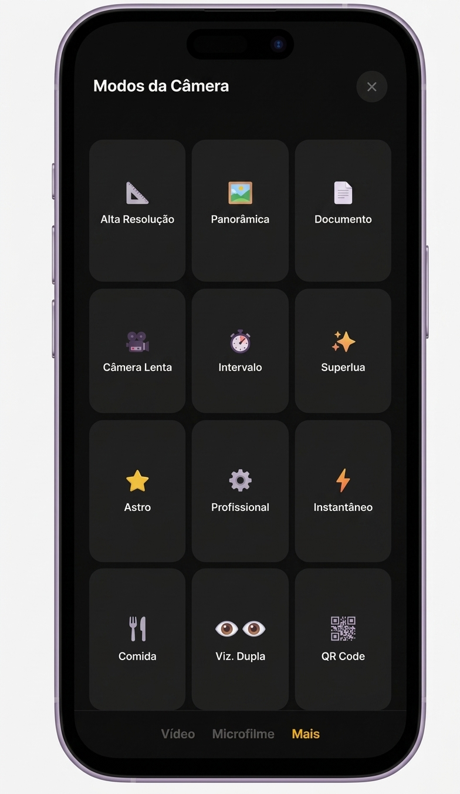
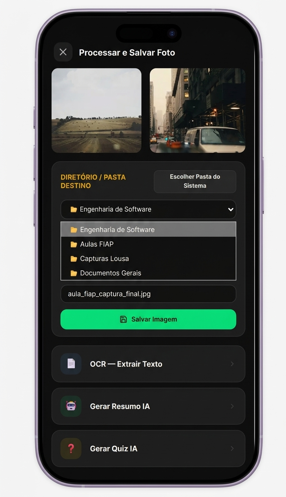
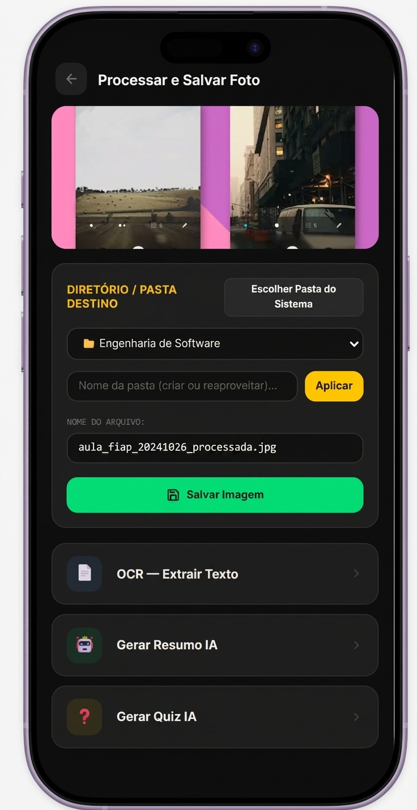

👨🏫
Modo Aula Automático
Reconhecimento de ambiente por localização e horário, ajudando na captura das imagens.
Potencializando a câmera dos smartphones JOVI com inteligência contextual para captura de lousas, leitura OCR, resumo e geração de flashcards.
Conhecer a Solução
Detecta salas de aula e horários de estudo, ajustando foco e brilho para capturar lousas.
Extrai textos de quadros, cadernos e apostilas, permitindo copiar e organizar o conteúdo.
Transforma o conteúdo fotografado em perguntas, respostas e cartões de memorização.
Reconhecimento de ambiente por localização e horário, ajudando na captura das imagens.
Detecção automática dos cantos para digitalização de cadernos e livros.
Transformação da imagem da aula em tópicos, exercícios e cartões de revisão.
A solução foi criada para estudantes fulltime que precisam conciliar aulas, trabalhos, projetos e rotina pessoal.

Cena 1: Login e Preferências

Cena 2: Modo Lousa em Análise

Cena 3: Antirreflexo e Ajuste Ativo

Cena 4: Modos da Câmera JOVI

Cena 5: Seleção de Pastas do Sistema

Cena 6: Processamento, OCR e IA
Clique em um botão para testar as ações.
A proposta utiliza sensores de baixo consumo e processamento otimizado.
Sim. O sistema pode realizar ajustes automáticos para melhorar a imagem.
A extração básica de textos pode funcionar offline. Recursos de IA precisam de conexão.
RM: 574060
RM: 572623
RM: 572933
RM: 569038
RM: 571611